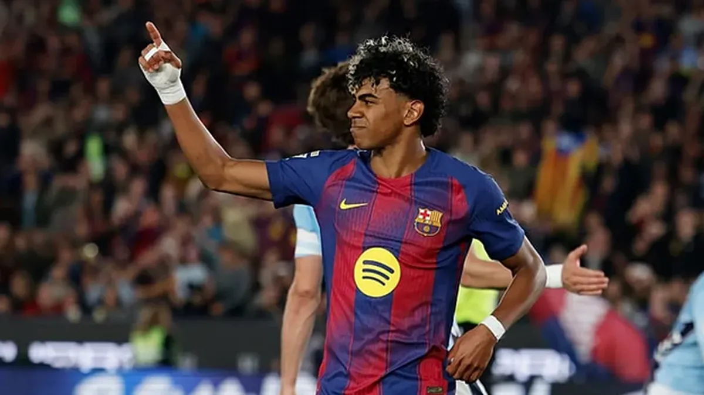
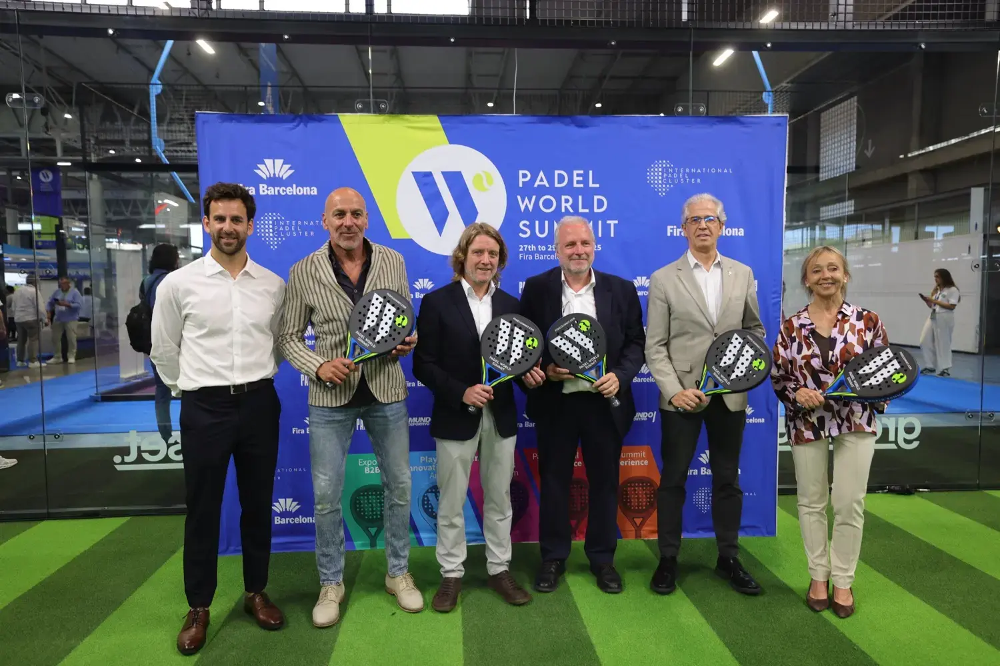
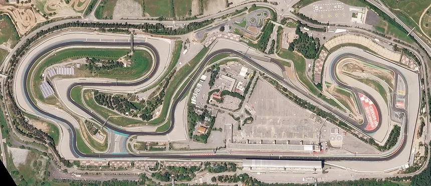
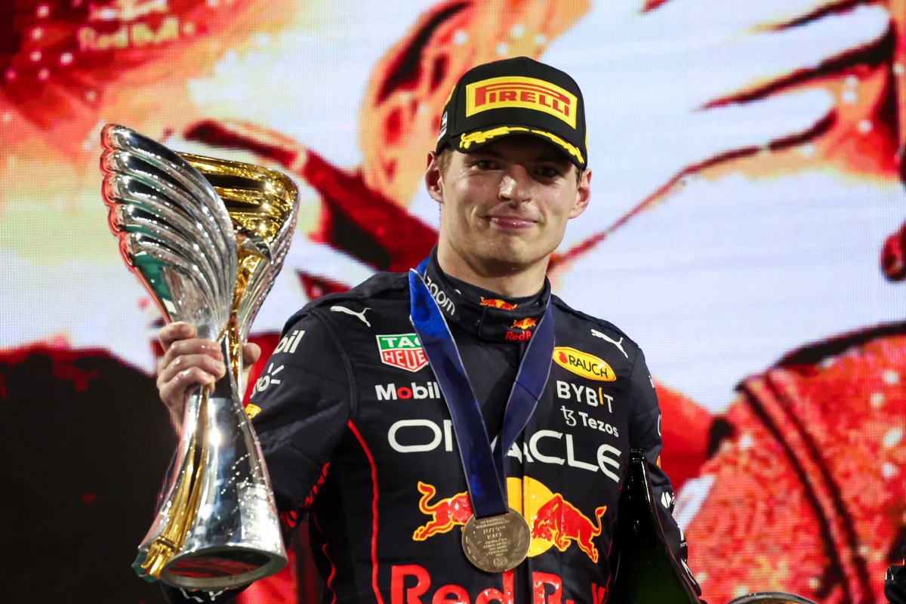
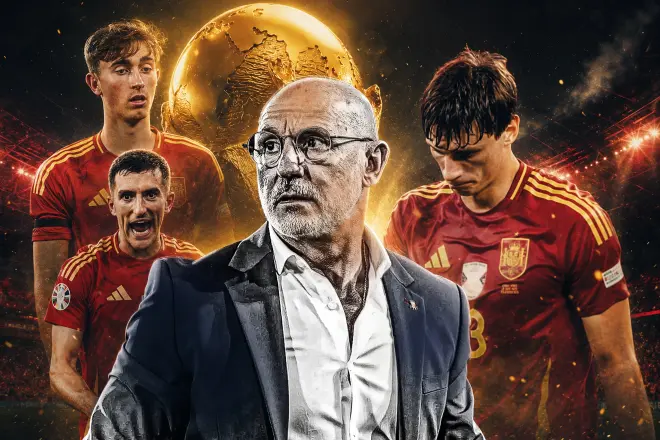

Lamine Yamal, Balón de Oro Sub-21
La joya azulgrana se lleva el galardón tras liderar al Barça en la conquista de la Champions.

A solo un mes del inicio, las 48 selecciones ultiman su preparación en las sedes de EEUU, México y Canadá.



La joya azulgrana se lleva el galardón tras liderar al Barça en la conquista de la Champions.

El neerlandés sentencia el Mundial con cuatro carreras de antelación tras ganar en Singapur.

La pareja sensación del circuito arrolla en la final del Madrid Premier Padel logrando el título.

Los tres con más minutos que se han quedado sin Mundial